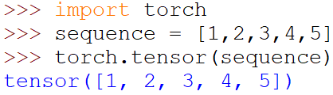
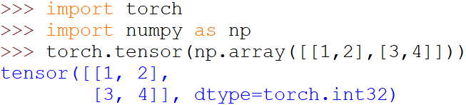
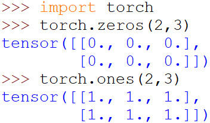
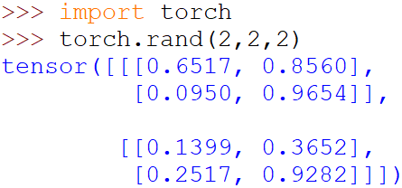
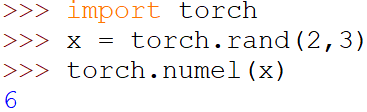
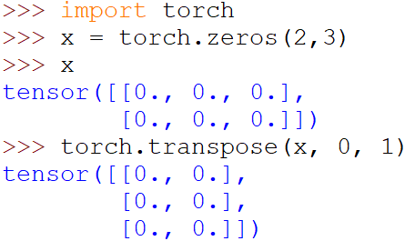
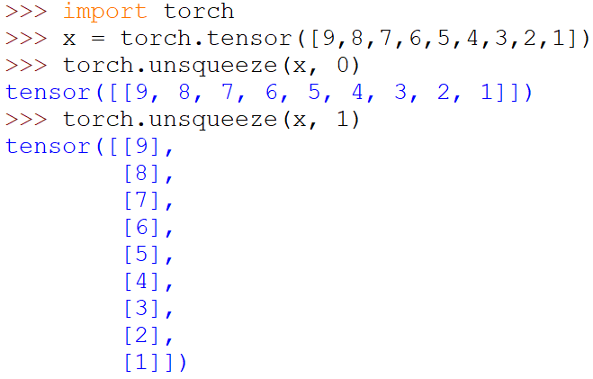
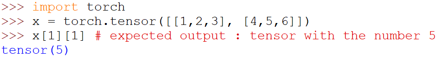
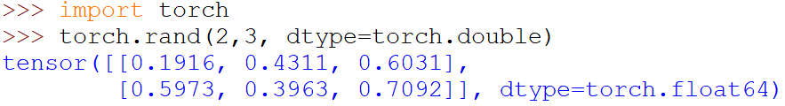

Tensors: they are multi-dimensional matrices containing elements of the same data type. It can also consist of one number. We use them to represent the data that we train our model on. What makes these tensors powerful is that they are really fast in computation. They also have a bunch of cool features that are helpful when solving any machine learning/deep learning problem.
Now, there are many ways you can create a tensor:
1- Creating a tensor from a python list or sequence (numpy arrays for example.)
Here we convert a python list to a pytorch tensor.
2- Creating a tensor with specific values
torch.zeros() creates a tensor filled with zeros with the dimensions given, while torch.ones() creates a tensor filled with ones with the given dimensions.
3- Creating tensors with random values
Note: There are many other ways to create tensors, but these might be the most ones you'll find yourself using.
Number of elements in the tensor:
Transposing a tensor:
Here, 0 and 1 are the dimensions that we want to swap.
Something worth noting here is that a tensor transposed using torch.transpose() shares the same underlying storage as with the input tensor, so changing the contents of one of these tensors will happen also on the other tensor.
Adding a dimension in a tensor:
The number we enter with the tensor is the place where we want the new dimension to be. A value between[-input_tensor_dimension_count - 1, input_tensor_dimension_count + 1] can be used.
These are some of the functions that you might see often, though there are plenty of others. You don't need to memorize them all, you can look them up in the documentation when you see one that you don't know or remember.
Python's indexing and slicing notation can be used on tensors too!
Each tensor has one type. There are a lot of data types that can be used, here you can find them all. Make sure you use the one that can fit in your memory.
Here we wanted a randomly set tensor with 64-bit floating point elements.
So that's it! We are now able to create tensors with the desired data type and perform operations on them. These tensors are essential in pytorch, as the data we import must be converted into tensors. See you next time!